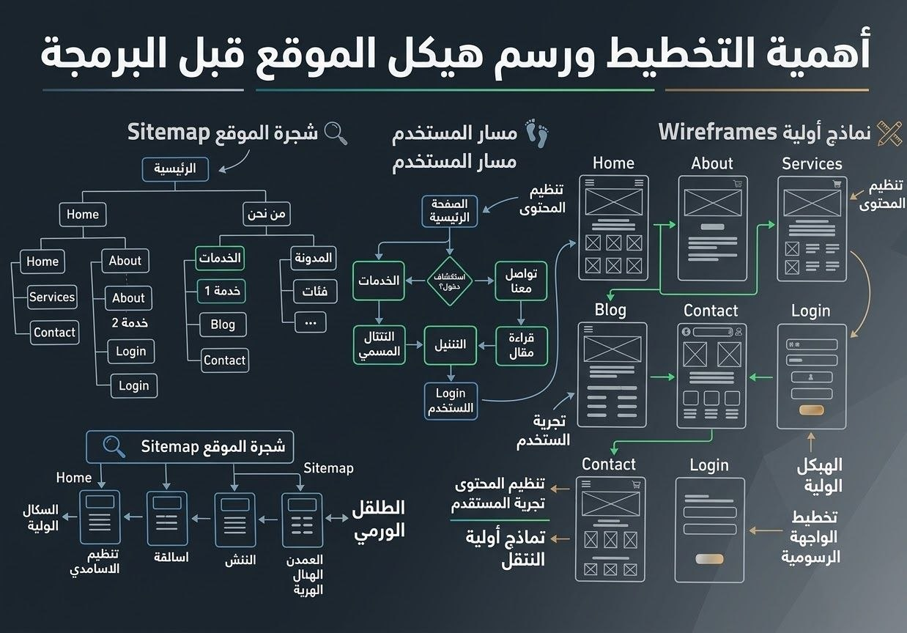

أهمية التخطيط ورسم هيكل الموقع قبل البرمجة
الطالبة:اسماء احمد سليمان ابراهيم احمد
مجموعه:أ
سكشن:A17
"المقدمه"
من أهم الخطوات الأساسية التي لا غني عنها قبل البدء في كتابة أي اكواد برمجيه هى خطوة التخطيط المسبق ورسم الهيكل البصري لأي موقع إلكتروني، وتتركز أهمية هذه الخطوة في انها تُحاكي التصميم الهندسي للبيت قبل بنائِهِ ؛ فإنه يستحيل علي العُمال البدء في أعمال البناء وتخطيط المساحات (توزيع الفراغات، مسارات الحركة، التهوية والإضاءة) بدون تصميم هندسي صَريح؛ كذلك أيضاً يستحيل للمُبرمج البدء في عملية كتابة الأكواد بدون تحديد واجهة المستخدم وايضا تجربة المستخدم .
مِمَّا لا شَكَّ فِيهِ أنَّ التخطيط الهيكلي يساهم بشكل أساسي في بناء واجهة المستخدم (UI) ورسم أبعاد تجربة المستخدم (UX) : من حيث تحديد أماكن أدوات التنقل وعناصر التحكم والمحتوي ب اسلوب يُؤكد سهولة وسلاسة التصفح ، ومن أهمية هذه المرحلة توفير الكثير من الوقت والجُهد وتمنع الأخطاء المُسببة للخسائر ،نظراً إلي التعديل علي المخطط المبدئي أو إعادة بنائه أسرع وأقل تكلفه بكثير من التعديل علي الأكواد البرمجية بعد أن تم كتابتها ويهدف هذا البحث إلي التركيز علي أهمية رسم الهياكل البصرية قبل البرمجة ، مع توضيح دور أشهر الأدوات المخصصة لهذا العمل .

s"الجدول"
| مرحلة إنشاء البيت | مرحلة تصميم وتطوير الموقع | الهدف والخدمه الرقمية |
| المُخطط العام للبيت | هيكل الموقع(Sitemap) | تخصيص عدد الصفحات (الرئيسية، المنتجات،) وكيفية التنقل بينها |
| التصميم الهندسي وتنظيم الأثاث | التخطيط الهيكلي (Wireframing) | تنظيم العناصر (أزرار 'أدوات التحكم'، صور، نصوص) بلون أبيض وأسود لتأكيد سهولة الاستخدام |
| الديكور، وطلاء الجدران والفرش | التصميم البصري (UI Design) | إدخال الهوية البصرية:الألوان، والخطوط، و المظهر الظاهري، والأيقونات لإضافة الروح للموقع |
| صب خرسانة و البناء الفعلي | البرمجة والتطوير (Development) | تحويل التصميم البصري إلى أكواد برمجية حية تستجيب للتفاعل |
عرض الموضوع: الفوائد والأدوات العملية للتخطيط المسبق
- الأسباب والعائد الاستثماري من التخطيط المسبق:
- منع إعادة التصميم (Rework): التعديل على المخطط البصري (Wireframe) يكتمل في لحظات لا تُذكر عبر أدوات التخطيط، بينما يستلزم معالجة الأكواد البرمجية المكتوبة وقتاً طولاً يستغرق أياماً من إعادة الهيكلة البرمجية والتطوير.
- توفير الوقت والمصاريف: يساهم في اكتشاف عيوب تجربة المستخدم عبر مراحله الأولى في الحفاظ على ميزانية المشروع وتلافي بناء ميزات برمجية قد يتم إلغاؤها أو تعديلها مستقبلاً.
- ضمان تجربة مستخدم سلسة (UX): التخطيط المدروس له بعناية وإتقان يمنح المُستخدم رحلة تصفح سهلة ومريحة داخل المنصة للوصول إلى مُتطلباته دون تشتت.
- تسلسل مراحل التحول (من الفكرة إلى البرمجة البرمجية):
- House Map Sitemap: تحديد بنية المعلومات و المخطط الهيكلي العام للموقع.
- Room Sketch Wireframing: تخطيط وتنسيق العناصر البصرية والأدوات التفاعلية باللونين الأبيض والأسود.
- Interior Decor UI Design: تنفيذ الهوية البصرية، تحديد الألوان، وتنظيم الخطوط.
- Concrete Foundations Development: تأسيس قاعدة الأكواد البرمجية الفعلية لإنشاء موقع إلكتروني نشط.
- دور أدوات التخطيط المباشرة ومن أشهرها (أداة Draw.io):
- رسم التصاميم الهيكلية"Wireframes"والتتابعية "Flowcharts" بسهولة عبر جذب العناصر (أدوات التخطيط والتصميم) واسقاطها لكي يتم تشكيل الواجهات وتنظيم العناصر البصرية "UI Elements"بسهولة تامة قبل كتابة أكواد HTML و CSS.
- المراجع
- سمر سالم، أساسيات هندسة وتصميم واجهات المستخدم وتجربة المستخدم (UI/UX Fundamentals)، دار الفكر العربي، 2024.
- منصة تكنولوجيا المعلومات، دورة تطوير الويب الشاملة: أهمية التخطيط الهيكلي للمواقع (Wireframing & Sitemap Design) 2025
- الموقع الرسمي لأداة Draw.io، Draw.io Documentation & Flowchart Guides، تم الاطلاع عليه في نوفمبر 2026
فالاستثمار في مرحلة تصميم الهيكلة البصرية والمخططات السلكية قبل كتابة الأكواد يحقق مكاسب جوهرية للمبرمجين والمنصات:
يوضح التسلسل التالي كيف تتحول الأفكار الهيكلية إلى موقع ويب عملي قابل للتفاعل ويستجيب له:
تُعد أداة Draw.io (أو Diagrams.net) من أبرز الأدوات المتاحة والمجانية التي تعتمد عليها فرق العمل والمبرمجون حيث تتيح :